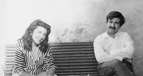

1930
René Brô naît le 21 Novembre à Charenton près de Paris, non loin de la maison natale de Delacroix.
1948
Se livre à l'écriture phonétique. Participe à une exposition de groupe " l'art et la vie " galerie Mai avec Arland, Bernard Buffet, Lorjou, Bernard Rousseau. Présentation Adam Saulnier. Étudie au Musée de l'Homme l'art primitif, précolombien et indien de la côte Nord-Ouest.
1949
Voyage à pied en Italie. Rencontre à Florence Hundertwasser avec lequel il se lie d'amitié. Etudie la peinture toscane. Le voyage se terminera en Sicile. Travail et visite des œuvres d'art.
1950
Peint avec Hundertwasser deux fresques à Saint-Mandé dans l'ancien hôtel de la Comtesse Castiglione.
1951
Travaille dans le Midi à Ramatuelle près de Saint-Tropez.
1952
Installe son atelier à Saint-Maurice, près de Paris. Plusieurs artistes y vivront dont Hundertwasser et Ernst Fuchs.
1954
Première exposition personnelle au Centre Saint Jacques chez le Père Valée, organisée et présentée par le critique Julien Alvard.
Brô en Normandie, à Courgeron, dans les années 60.
1955
Participe à l'exposition "Peintres nouveaux", galerie Augustinci, rive gauche, avec Arnal, Calmette, Castro, Dmitienko, Maryan. Texte de Julien Alvard.
1956
Exposition de groupe chez Paul Facchetti, Paris.
1957
"Micro-salon", galerie Iris Clert, rue des Beaux Arts. Exposition du "Micro-salon" à la galerie Tartarruga à Rome.
1958
Exposition personnelle "le dernier des arcadiens" chez Iris Clert, présentée par Pierre Restany. S'installe dans un manoir en Normandie. La vue panoramique de son atelier sur la campagne normande sera pour lui une grande source d'inspiration qui durera au cours des années.
1959
Exposition personnelle chez Iris Clert Galerie Charpentier, "l'Ecole de Paris", exposition présentée par Jacques Lassaigne. Brô en exécute l'affiche et y expose "La grande pêche miraculeuse" (coll. Benesch N.Y.) Exécution d'une lithographie chez Mourlot. Participation à la première Biennale de Paris, Musée d'art moderne de la ville de Paris. Participation à la Biennale de Turin.
1960
Exposition de groupe; "Antagonismes" au Musée des arts décoratifs, organisée par Julien Alvard. "Paris obsessions" exposition de groupe à galerie Stæmpfli, New-York, USA
1961
Exposition chez Iris Clert, rue du Faubourg Saint Honoré, organisée par Julien Alvard. Durant les années 60, Brô participera activement à la vie de la galerie, au "Brain trust" avec Yves Klein, Takis, Arman, Tinguely, Bury, Hains, Stevenson, puis à la rédaction régulière d'Iris Time (le Brô-Notes). Participation au Salon d'Art Sacré, Musé d'Art Moderne de Paris.
1962
Exposition de groupe à l'université d'Oxford. "Piccola Biennale", Iris Clert, au Palais Papadopoli, à Venise. Son tableau "l'Automne à Courgeron" entre dans la collection de Peggy Guggenheim.
1963
Ci contre; Iris Clert et Brô à Courgeron en 1963
"Sculptures de peintres" chez Claude Bernard. Sculpture en plomb (coll. Marquis de Ségur). Salon de Mai, Paris,. Exposition personnelle chez Iris Clert. Biennale de Paris, Musée d'Art Moderne. Salon d'Art sacré , Paris. Exposition "l'Objet" au Musée des arts décoratifs, Paris où il expose "le Secrétaire Fantastique", meuble peint. Exposition au Musée d'Art Moderne de New York de son tableau "Spring Blossom" dans les acquisitions récentes. Galerie Creuzevault, Paris "le Diabolisme dans l'Art", il expose son tableau "Lilith", présenté par Gassiot-Talabot.
1964
Biennale de Venise. Salle personnelle dans le pavillon français, présenté par Jacques Lassaigne. Préface de Gassiot-Talabot. Participe à la Biennale flottante d'Iris Clert, Venise. Participe à l'exposition "Nieuwen-Realisten" au Gemeentemuseum, La Haye, Pays-Bas.
1965
Exposition personnelle à la galerie Iris Clert, Paris, préface de Marie-Laure de Noailles. Salon "Comparaisons", Paris. Participe à l'exposition "Les néo-individualistes", Institut français de Berlin, organisée par Iris Clert "Popart" - exposition de groupe, Palais des Beaux Arts, Bruxelles. Il rencontre Peter O'Toole, qui deviendra un de ses grands collectionneurs. Entre dans la collection du Duc et de la Duchesse de Windsor. Exposition de la collection Guggenheim à la Tate Gallery de Londres (dans laquelle figure "l'automne à Courgeron"); reprise ensuite au Musée d'art moderne de Stockholm.
1966
Voyage aux Etats Unis. Exposition de groupe; "French Fortnight" chez Neiman-Marcus, Dallas. Exposition personnelle Gallery of Modern Art, Scottsdale, Phoenix, Arizona.
1967
Période de dépression.
1968
Exposition personnelle, galerie La Balance, Bruxelles. Exposition de groupe au Musée de Saint Etienne, France, présentée par Maurice Allemand et Bernard Ceysson. "Prospeckt", Musée de Düsseldorf, Allemagne. Installe un atelier à Venise, à la Giudecca, où il vivra une grande partie de l'année les dix années suivantes.
1969
Exposition personnelle galerie Iris Clert, Paris.
1972
Exposition personnelle à Houston, Texas, à la galerie Kiko. Voyage aux Etats Unis et en Amérique Centrale. Séjour au Guatémala. Exposition de groupe à la galerie Talien, Saint-Tropez, organisée par Iris Clert. Exposition de groupe "Iris Clert group show" au Studio S. à Venise. Exposition personnelle galerie Meneghini, Venise.
1973
Exposition personnelle galerie Oppidum, Raymond Cordier, Paris.
1974
Exposition personnelle galerie Anderhub, Zurich, organisée par Peter Hellstern, Ars Viva, Zurich.
1975
Peint à Venise. Voyages à bord du Regentag avec Hundertwasser
1976
Exposition personnelle , Euroart Stadtgalerie, Vienne, Autriche.
1977
Exposition personnelle galerie Amstutz, Zurich.
1978-1979
Travaille en Normandie
1980
Expositions personnelles en Norvège: Galerie Hammerlund, Oslo Galerie Oddvar Olsen, Drammen. Galerie J. Aasen, Alesun.
1981
Voyage autour du monde. Visite les Indes, la Nouvelle-Zélande et Tahiti. Exposition personnelle galerie Baumgartner, Washington D.C.
1982
Exposition personnelle galerie Baumgartner, Washington D.C.
1983
Travaille en Normandie et à Paris.
1984
En novembre, exposition personnelle au Musée Gauguin à Tahiti où il séjourne plusieurs mois.
1985
Participe à l'exposition "France 1950, vingt pièces majeures", galerie 1950, avec le secrétaire fantastique.
1986
Deuxième voyage à Tahiti. Los Angeles. Nouvelle-Zélande. Travaille en Normandie. Participation à l'hommage à Iris Clert, Acropolis, Nice. Meurt brusquement en décembre, à Paris